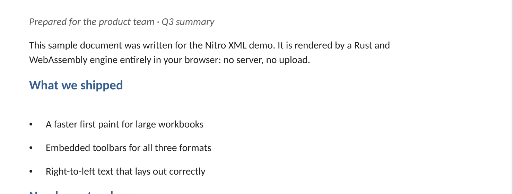
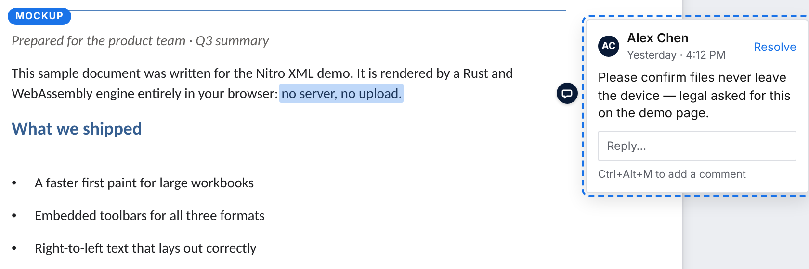
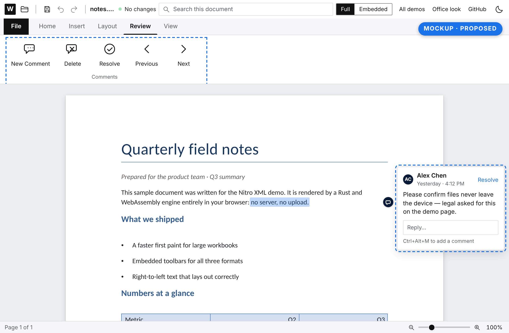

Add comments in the margin, and let host apps hook into them
Approve: tap 👍 on the issue · Decline: tap 👎
Close-up of the change




Full screen

Today: there is no Review tab and no comment balloons. You can't attach a comment to a phrase, and a host app has no comment API to call.


Mockup: Review > Comments (New Comment, Delete, Resolve, Previous, Next). A highlighted phrase opens a margin card to reply or resolve, as in Word and Google Docs.
Tap an image to open it full size.
Why
Comments are how people review a document in Word, Google Docs, OnlyOffice and Collabora, and they are one of the main reasons a host app wants getSelection() — to anchor a note to a phrase. Nitro already has the model and edit ops to add, reply, resolve and delete Word comments, but there is no Review tab, no margin balloon, and no host event. Shipping the UI (and a small host hook) lets reviewers work in the document and lets embedding apps show or create the same comments.
Definition of done
- A Review tab offers New Comment, Delete, Resolve, Previous and Next; Ctrl+Alt+M adds a comment on the current selection (or the word at the caret).
- The commented range is highlighted; a margin card shows author, time, the text, Reply and Resolve; Previous/Next move between comments; Delete removes the comment and its anchor as one undo step.
- Saved files open in Word and LibreOffice with the comments intact (validator + round-trip in CI); a file that already has comments shows them on open.
- Host API (and React equivalents): el.getComments(), el.addComment(text) using the current selection, and a nitro-comment event when a comment is added, replied to, resolved or deleted. This complements getSelection().
- Playwright tests cover add, reply, resolve, delete, save round-trip and the host hooks; bundle-budget and all required checks green. No first-load size limit is raised; new code stays in the lazy Word chunk.
Approve: tap 👍 on the issue · Decline: tap 👎